（十五） 图论入门
并查集能回答是否连通，却不记录从哪里经过哪些道路或路程多长。把道路写成边、地点写成点，再复用 DFS、BFS、堆和 DP 处理路径与依赖问题。
图论研究“对象之间怎样连接”。先把题目中的对象抽象为顶点，把允许的一步关系抽象为边，再选择算法；道路长度、任务先后和格子移动虽然都能建图，所求的答案却可能完全不同。
1. 顶点、边、路径与连通性
1.1 先建立准确的图模型
记图为 \(G=(V,E)\)，V 是顶点集合，E 是边的集合。本章用 n 表示顶点数、m 表示题目输入的边数，编号为 0…n-1。有向边记为 u→v；无向边连接 u、v 两端，允许双向通过，但输入时通常只写一次。
| 题目对象 | 顶点 | 边的含义 | 常见目标 |
|---|---|---|---|
| 城市与道路 | 城市 | 可以直接行驶的一条道路 | 能否到达、最短距离 |
| 人与朋友关系 | 人 | 两人之间直接的关系 | 连通块、是否同组 |
| 迷宫 | 可走格子 | 一次合法移动 | 可达性、最少步数 |
| 课程或任务 | 课程、任务 | u 必须先于 v 完成 | 合法执行顺序 |
“有关系”不自动表示“能走”。若关系是“互相不能同组”，边表示约束，适合二分图染色；若是道路，边表示允许移动。边的定义决定后面的判断如何写。
有向与无向： u→v 表示从 u 到 v 的方向；从 v 回 u 则要再找相反方向的路径。一条双向道路可表示为无向边，也可在邻接表中存两条反向记录。存储记录数加倍，题目输入的边数 m 不变。
无权与带权： 无权最短路通常数边数，每步代价统一；带权图的边附有时间、长度、费用等权值，例如路线总费用是沿途边权相加；若题目问一路最高的费用，就沿途取最大边权。先写出题目怎样计算一条路径的值，再决定怎样比较和更新。零权边是存在且费用为 0 的边，不能用 0 同时表示“没有边”。
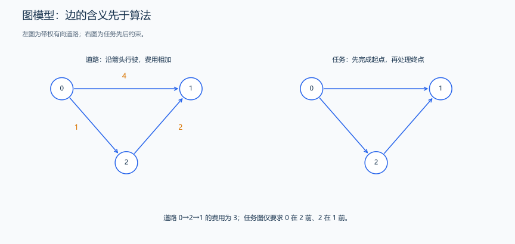
道路的方向与权值限制移动，依赖边则要求先完成起点任务。
1.2 度、自环、重边与简单图
无向图中，度 deg(u) 是连接到 u 的边端点数量。边 (u,v) 各给两端增加 1；自环 (u,u) 在同一顶点贡献 2。因此所有顶点的度之和为 \(2m\)，因为每条边有两个端点。孤立点的度为 0，它仍然是图中的一个顶点。
有向图分入度和出度：u→v 给 u 的出度加 1、v 的入度加 1；所有入度之和与所有出度之和均为 m。入度为 0 不等于孤立，它可以有出边；出度为 0 也可能有入边。
自环的两端相同，重边是同一对端点之间存在多条边。无自环、无重边的图称为简单图；有向图的 u→v 与 v→u 是不同方向，不能把它们当作同一条重边。
无向图存自环时也写两次，邻接表长度与度相符；最短路可以保留重边或取最小边权；拓扑排序读入一条记录时给终点入度加一，处理起点时再沿这条记录给终点入度减一。二分图中的自环直接造成矛盾，因为顶点不能与自己颜色不同。
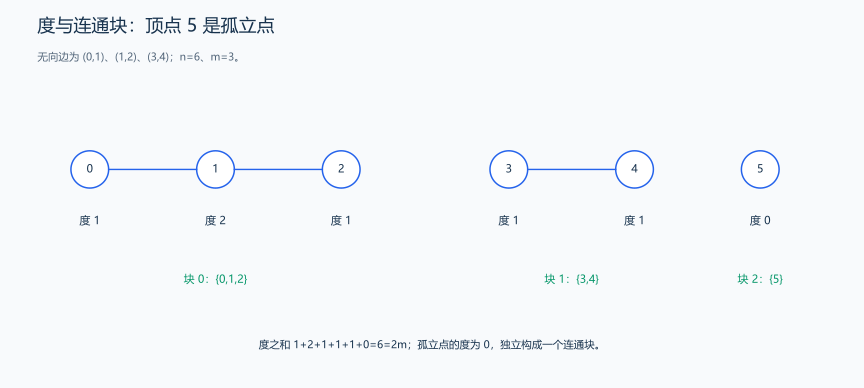
每条边给两端各贡献一次度；孤立点单独构成一个连通块。
1.3 走法、路径、环与距离
一串按边连接的顶点 v0→v1→…→vk 是合法走法。一般走法允许重复顶点或边；简单路径不重复顶点。不同教材对“路径”的用词略有差别，解题时应明确题目是否允许重复，本章求非负最短路时可以选取不绕环的最优路径。
路径的边数长度为 k，不是 k+1；加权费用是 k 条边权之和。例如 0→2→1→3 经过 4 个顶点、3 条边，边权为 1、2、1 时费用为 4。环是在合法方向下绕行回到起点的关系；无向图沿同一条边走过去再回来，不算由不同边构成的普通环。判断无向环时需要区别父边与额外边，重边还需要区别具体的边记录。
可达表示存在至少一条合法路径；距离是所有合法路径中最小的长度或代价。没有路径时用 -1 或 INF 表示不可达。起点到自己允许不走任何边，费用为 0。
负权边不等于负环。若能从起点到一个负环，再从该环到目标，反复绕环可让费用无限降低，目标没有有限最短距离。下面的道路费用都是非负数，多走一条边不会让累计费用降低，Dijkstra 正是利用这个性质逐步确定最短距离。Floyd 则枚举中转点组合路径；负环对路径的影响，会从“反复绕环”的变化来判断。
1.4 连通性、树与 DAG
无向图中，彼此可达的顶点构成一个连通块，不同块之间没有边。只有一个连通块的无向图是连通图；孤立点独自构成一个块。
有向图的箭头决定行走方向。例如只有 0→1 时，0 能到 1，1 没有返回 0 的边。任意两点互相可达叫强连通；忽略箭头后连通叫弱连通。从起点做一次 DFS 会得到这个起点能到达的点；在 0→1 中两点都被访问，但它们没有互相可达，因此是两个强连通分量。
树是连通且无环的无向图，n 个顶点恰有 n-1 条边，两点间有唯一简单路径。森林无环但可以不连通，有 c 个连通块时边数为 n-c。仅“边数为 n-1”不足以判断是树：一个三角形加一个孤立点有 4 个顶点、3 条边，却不连通且有环。
DAG（有向无环图）有方向且无有向环。忽略方向后仍可能含环，例如 0→1、0→2、1→3、2→3；沿方向不能绕回起点，因此是 DAG，可以用拓扑序安排状态计算。
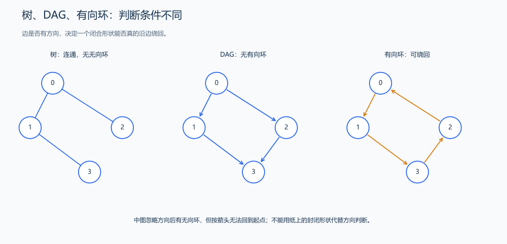
树的无环与 DAG 的无有向环不是相同条件。
2. 建图过程与存储方式选择
2.1 邻接表、邻接矩阵与边表
图的输入通常是一组边，但搜索时经常要回答“从顶点 u 可以直接走到哪些点”。建图就是把输入整理成方便回答这些问题的数据结构。顶点编号只是下标约定，不代表空间位置；下面统一使用 0…n-1。
2.1.1 邻接表：每个顶点有一张邻居列表
可以把邻接表想成一本通讯录：每个顶点有自己的条目，条目内只记它能直接到达的邻居。vector<vector<int>> graph(n) 的外层有 n 个位置，graph[u] 是顶点 u 的内层动态数组，开始时为空；每读到一条边，就向对应列表追加终点。
这里的“表”指邻居列表，本例用 vector 实现；学习邻接表时，要先理解“每个顶点分别保存自己的邻居”，再看它采用哪种容器。
例如无向边为 (0,1)、(0,2)、(1,3)，最终得到：
| 外层下标 | 该顶点的邻居列表 | 含义 |
|---|---|---|
| 0 | [1,2] |
从 0 可以一步到 1 或 2 |
| 1 | [0,3] |
从 1 可以一步到 0 或 3 |
| 2 | [0] |
从 2 可以一步到 0 |
| 3 | [1] |
从 3 可以一步到 1 |
graph[0][1]=2 的意思是“顶点 0 的第二个邻居是 2”，第二个下标是列表里的位置，不是目标顶点编号。因此，不能用 graph[u][v] 直接判断 u 与 v 是否有边；要在 graph[u] 中查找值 v。没有邻居的顶点仍有一个空列表。
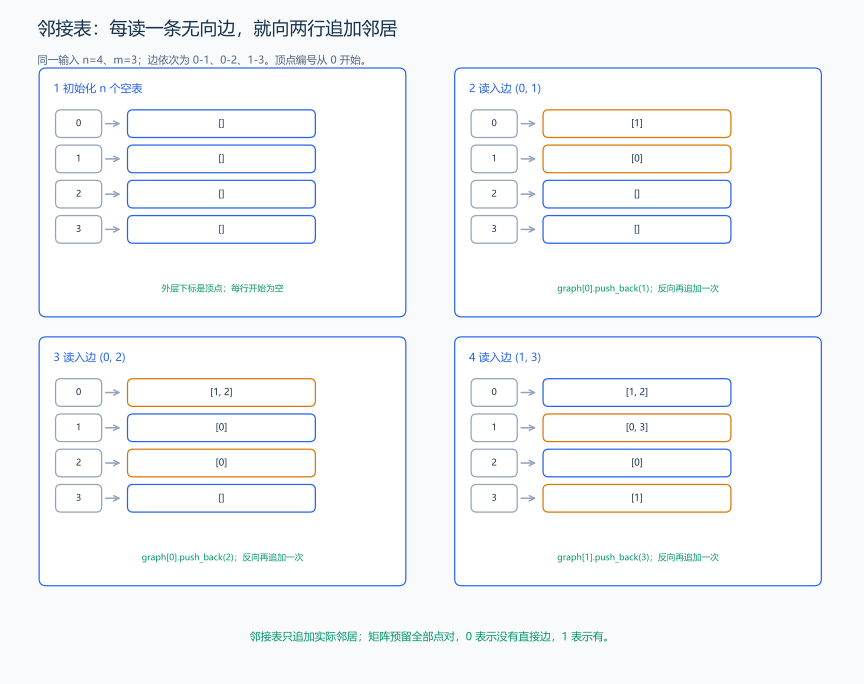
读 (0,1) 时，向 graph[0] 追加 1、向 graph[1] 追加 0；读 (0,2) 后，只改变第 0、2 行；读 (1,3) 后，只改变第 1、3 行。每一步只保存这条边真正涉及的邻居。
无向边允许从两端互相到达，所以追加两次；有向边 u→v 只向 graph[u] 追加 v。普通 vector 邻接表按追加顺序存储，不会自动排序。它也会保留重边；无向自环执行两次追加，正好对应自环对度的两次贡献。
2.1.2 邻接矩阵：每一对顶点预留一个格子
邻接矩阵是一张 n 行、n 列的表。行 u 表示出发点，列 v 表示到达点，matrix[u][v] 直接回答这一对顶点的关系。在无权“是否有边”的版本中，先全部填 0；读到 u→v 后写 1。
同一组无向边得到：
| 出发点 到达点 | 0 | 1 | 2 | 3 |
|---|---|---|---|---|
| 0 | 0 | 1 | 1 | 0 |
| 1 | 1 | 0 | 0 | 1 |
| 2 | 1 | 0 | 0 | 0 |
| 3 | 0 | 1 | 0 | 0 |
例如 matrix[0][2]=1 表示 0、2 直接相邻；matrix[1][2]=0 表示没有直接边，即使它们能经 0 到达，也不能把这一格写成 1。这里记录的是直接边，不是整个图的可达关系。
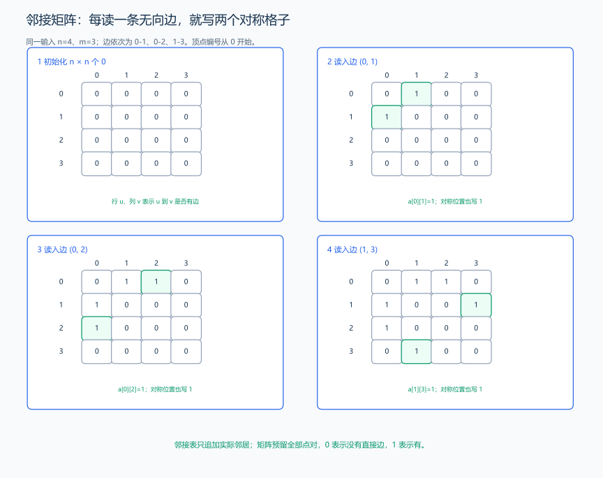
无向边 (0,1) 要写 matrix[0][1]=1 与 matrix[1][0]=1，因此无向图的矩阵关于主对角线对称。有向边只写规定方向，矩阵不一定对称。普通无权存在性矩阵遇到重边仍写 1，只保留“存在”，不保留条数；若需要重边数量，应另约定格子存计数并累加。
这个版本的对角线初始为 0，读到自环后对应格子变成 1。不能把它与后面最短路矩阵的“对角线为 0”混淆：那里 0 表示不移动的空路径代价，格子的含义已经改变。
2.1.3 边表：每条输入边单独存一条记录
边表直接保存 (u,v) 或 (u,v,w)，像把输入行收进一个数组。它方便枚举全部边、按权值排序，所以 Kruskal 常用边表；但若每次想找 u 的邻居，通常要扫过全部记录。无向边在边表中可只保存一次，“写两个方向”是为了邻居查询，不能把所有表示都机械地加倍。
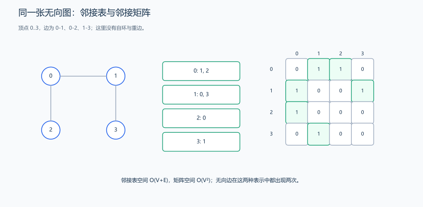
图的结构相同，存储位置的含义不同。邻接表的各行长度随邻居数变化；矩阵的每行固定有 n 格，包括没有边的位置。
| 表示 | 空间 | 枚举 u 的邻居 | 查询 u、v 是否直接相邻 | 常见场景 |
|---|---|---|---|---|
| 邻接表 | \(O(n+m)\) | \(O(\deg(u))\)；有向图看出度 | 普通 vector 需扫描 u 的列表 | 搜索、Dijkstra、拓扑排序 |
| 邻接矩阵 | \(O(n^2)\) | 扫描第 u 行，\(O(n)\) | 读一个格子，\(O(1)\) | 小规模稠密图、Floyd |
| 边表 | \(O(m)\)，另计顶点数据 | 通常需扫全部边，\(O(m)\) | 通常需扫全部边 | Kruskal 全边排序 |
n=100000、m=200000 时，邻接表随 n+m 增长；矩阵却有 10¹⁰ 个格子，每格 4 B 时约 37.25 GiB。存储选择先看规模和需要的操作：仅有少量边、主要枚举邻居时用邻接表；需要频繁读取所有点对且 n 较小时再考虑矩阵。空间还要计入 vector 对象、分配容量、队列和距离数组。
2.2 完整例题：读入并输出邻接表
题目原文（自拟）： 第一行输入 n m，1<=n<=1000、0<=m<=10000；随后 m 行各输入 u v，编号在 0…n-1，表示无向边，允许重边、自环。保留全部边记录，按顶点编号逐行输出 u:，后面按输入顺序输出 u 的所有邻居；没有邻居只输出 u:。
推导： 先创建 n 个空列表，每条无向边对 u 写 v、对 v 写 u。自环同样写两次；m 是输入边数，所有列表合计有 2m 条记录。每条边都按图中的两个追加动作处理。
#include <iostream>
#include <vector>
using namespace std;
int main() {
int n, m;
cin >> n >> m;
vector<vector<int>> graph(n); // 外层 n 个顶点，内层邻居列表初始为空。
for (int i = 0; i < m; ++i) {
int u, v;
cin >> u >> v;
graph[u].push_back(v); // 从 u 可以直接到 v。
graph[v].push_back(u); // 无向边还允许反方向；自环也按此写两次。
}
for (int u = 0; u < n; ++u) {
cout << u << ':';
// v 是邻居编号，依次取出 graph[u] 的元素即可枚举出边。
for (int v : graph[u]) cout << ' ' << v;
cout << '\n';
}
}输入：
4 3
0 1
0 2
1 3输出：
0: 1 2
1: 0 3
2: 0
3: 1代码与复杂度： graph[u].push_back(v) 新建一条从 u 到 v 的邻接记录；输出时枚举顶点，再枚举该列表。建图和输出共 \(O(n+m)\) 时间、\(O(n+m)\) 空间。m=0 时仍输出 n 行空列表。有向图只保留第一条追加语句；题目按 1 编号时可读入后减一，或统一开 n+1 个位置并枚举 1…n，不能只改一处。
2.3 完整例题：读入并输出邻接矩阵
题目原文（自拟）： 第一行输入 n m，1<=n<=1000、0<=m<=10000；随后 m 行输入 0…n-1 范围内的 u v，表示无向边，允许重边、自环。输出 n 行，每行 n 个整数，用空格分隔；第 u 行第 v 个整数为 1 当且仅当 u、v 之间存在直接边，否则为 0。重边只表示一次存在，自环使对应对角格为 1。
分析： 每个点对预留一格，初值全为 0。输入 (u,v) 时填写两个对称位置；重复赋 1 不会增加数值。读取 matrix[u][v] 可直接判定是否有边，枚举 u 的全部邻居则需检查整行的 n 个格子。
#include <iostream>
#include <vector>
using namespace std;
int main() {
int n, m;
cin >> n >> m;
vector<vector<int>> matrix(n, vector<int>(n, 0)); // 每个点对都有一个格子。
for (int i = 0; i < m; ++i) {
int u, v;
cin >> u >> v;
matrix[u][v] = 1; // 行是出发点，列是到达点。
matrix[v][u] = 1; // 无向边要对称填写；自环是对同一格赋值。
}
for (int u = 0; u < n; ++u) {
for (int v = 0; v < n; ++v) {
if (v > 0) cout << ' ';
cout << matrix[u][v]; // 0 表示没有直接边，不表示两点完全不可达。
}
cout << '\n';
}
}输入：
4 3
0 1
0 2
1 3输出：
0 1 1 0
1 0 0 1
1 0 0 0
0 1 0 0样例推导与复杂度： 逐边填写的位置正是矩阵过程图中的绿色格；(0,2) 只写第 0 行第 2 列及第 2 行第 0 列，不会产生 (1,2)。初始化与完整输出都访问 n² 格，总时间 \(O(n^2+m)\)，额外空间 \(O(n^2)\)。矩阵中的行、列下标都是顶点编号，与邻接表的第二下标含义不同。
2.4 带权图的终点、权值与重边存储
带权邻接表不能只保存终点，因为最短路还需要知道这条边的代价。把一条记录定义为 {to,weight}，graph[u] 中的每个元素就同时包含终点和权值。边的两个端点相同而权值不同，仍是两条记录。
用于最短路的初始矩阵则保存“目前已知的最小代价”：对角线设 0，表示空路径；没有直接边的其他位置设 INF；读入重边时取最小权值。零权边是合法边，不能用 0 表示没有边。 这种矩阵会合并重边，也不保留“对角线为 0 是否源于自环”的明细；需要边的完整信息时保留邻接表或边表。
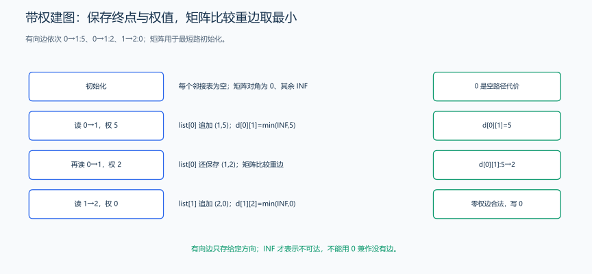
例如有向边 (0,1,5)、(0,1,2)、(1,2,0)：第 0 个邻接表保留 (1,5)、(1,2)，矩阵中 initialDistance[0][1] 从 INF 改为 5，再改为 2；第 1 个列表保存 (2,0)，矩阵的 (1,2) 为 0，确实存在一条免费边。
代码示例（建图函数）： 输入 n 个顶点、合法边三元组及方向标志，返回两种表示，便于小图对照。此教学函数约定 1<=n<=1000、权值在 [0,10^9]；大规模图按需求单独构造邻接表。
#include <algorithm>
#include <tuple>
#include <vector>
using namespace std;
struct WeightedEdge {
int to; // 终点，不是邻接表内的位置。
long long weight; // 从所属列表的顶点走向 to 的代价。
};
struct WeightedGraph {
vector<vector<WeightedEdge>> list;
vector<vector<long long>> initialDistance;
};
WeightedGraph buildWeightedGraph(int n, const vector<tuple<int, int, long long>> &edges,
bool directed) {
constexpr long long INF = 1LL << 60; // 无直接路径，与合法的零权边区分。
WeightedGraph result{vector<vector<WeightedEdge>>(n),
vector<vector<long long>>(n, vector<long long>(n, INF))};
for (int u = 0; u < n; ++u) result.initialDistance[u][u] = 0; // 空路径代价。
for (auto [u, v, w] : edges) {
result.list[u].push_back({v, w}); // 每条边都保留完整记录，包括重边。
result.initialDistance[u][v] = min(result.initialDistance[u][v], w);
if (!directed) {
result.list[v].push_back({u, w}); // 无向图补反方向；有向图不补。
result.initialDistance[v][u] = min(result.initialDistance[v][u], w);
}
}
return result;
}调用与解释： buildWeightedGraph(3, {{0,1,5},{0,1,2},{1,2,0}}, true) 得到图中列表和初始矩阵 [[0,2,INF],[INF,0,0],[INF,INF,0]]。initialDistance[0][2] 仍是 INF，因为尚未执行最短路；通过 1 到 2 的费用 2，要由后面的算法推导出来。若方向标志改为 false，每条边再向相反方向存一次。
复杂度： 构造列表部分为 \(O(n+m)\)，构造矩阵部分为 \(O(n^2+m)\)；同时返回两者时，总时间与额外空间均为 \(O(n^2+m)\)。后续遍历带权邻接表时，使用 for (auto [v,w] : graph[u]) 取出邻居和权值，不要把一条记录当成单个编号。
练习题： 洛谷 B3643 — 图的存储（同时练习矩阵与列表，注意按题面调整编号、排序和输出格式）。
3. 用搜索标记无向图的连通块
题目原文（自拟）： 输入无向图邻接表 graph，n>=1，编号合法，允许重边与自环。返回各顶点所在连通块编号；按枚举起点 0…n-1 的顺序，从 0 开始给块编号，孤立点也应得到编号。
思路： 从未标记顶点做一次 BFS，得到且仅得到这个起点可达的整块顶点，给它们同一个编号；再寻找下一个未标记顶点。只搜 0 会漏掉其他块，外层起点枚举不能省略。
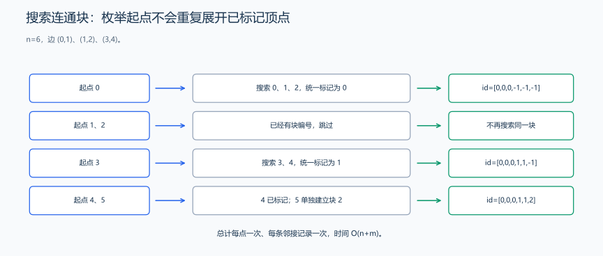
一次搜索覆盖一个完整块，下一起点必然属于尚未覆盖的块。
#include <queue>
#include <vector>
using namespace std;
vector<int> componentIds(const vector<vector<int>> &graph) {
int n = graph.size(), count = 0;
vector<int> id(n, -1);
for (int start = 0; start < n; ++start) {
if (id[start] != -1) continue;
queue<int> q;
id[start] = count; // 当前起点对应一个新连通块。
q.push(start);
while (!q.empty()) {
int u = q.front();
q.pop();
for (int v : graph[u]) {
if (id[v] != -1) continue;
id[v] = count; // 入队时标记，每个顶点只处理一次。
q.push(v);
}
}
++count;
}
return id;
}样例推导： n=6，边为 (0,1)、(1,2)、(3,4)，结果为 [0,0,0,1,1,2]。从 0 搜到 1、2；枚举到 1、2 时跳过；从 3 搜到 4；最后 5 独自成为第三块。两点编号相同当且仅当它们在无向图中连通。
复杂度为什么不是 n 次 BFS？ 每点标记后不再展开，每条邻接表记录也只在所属顶点处理时检查一次，所有搜索总时间 \(O(n+m)\)，额外空间 \(O(n)\)，另计图存储。静态图搜索可保留父边；动态加边并查询连通时可用并查集。
练习题： 洛谷 P1451 — 求细胞数量、洛谷 P1596 — 湖计数（允许八方向连接）。
4. 二分图：沿边给相邻顶点分组
二分图能把顶点分为两个互不相交的集合，使每条边的两端属于不同集合。它是约束能否成立的性质，和把图画在纸的左右两侧无关。
题目原文（自拟）： 输入无向图邻接表 graph，n>=1、编号合法，允许重边和自环。能否给所有顶点赋 0 或 1，使每条边两端异色？返回 pair<bool,vector<int>>；可行时为 true 和一种染色，否则为 false 和空数组。
分析： 每个未染色连通块任选一个起点为 0，沿边要求邻居为相反颜色。未染色则赋值，已染色则核对要求；遇到同色边立即失败。整块颜色全部翻转也不能消除同色边。
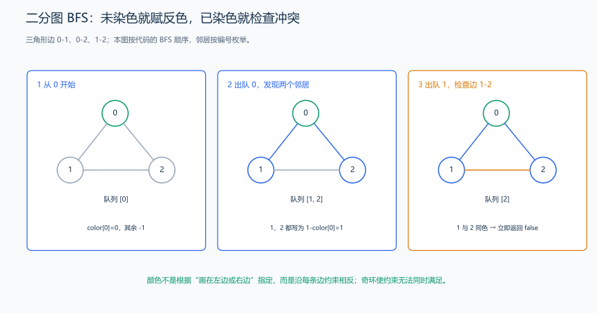
图按 BFS 实际执行三角形 (0,1)、(0,2)、(1,2)：先给 0 染色 0，出队后把 1、2 都染成 1 并入队；处理 1 时，邻居 2 已是 1，和当前颜色相同，立即返回失败。不是事后把三角形涂色得出结论，而是每次检查边都要求两端异色。四边形样例则可以完整通过这些检查。
#include <queue>
#include <utility>
#include <vector>
using namespace std;
pair<bool, vector<int>> bipartiteColors(const vector<vector<int>> &graph) {
vector<int> color(graph.size(), -1);
for (int start = 0; start < static_cast<int>(graph.size()); ++start) {
if (color[start] != -1) continue;
queue<int> q;
color[start] = 0; // 不同连通块分别选起点颜色。
q.push(start);
while (!q.empty()) {
int u = q.front();
q.pop();
for (int v : graph[u]) {
if (color[v] == -1) {
color[v] = color[u] ^ 1; // 在 0、1 之间翻转。
q.push(v);
} else if (color[v] == color[u]) {
return {false, {}}; // 当前边的异色约束无法满足。
}
}
}
}
return {true, color};
}样例： 边 (0,1)、(1,2)、(2,3)、(3,0) 返回 [0,1,0,1]。若再加 (0,2)，两点都与 1 相邻，染成了同一种颜色，但新增边要求异色，返回失败。
奇环为什么失败？ 沿每条边翻转一次，走奇数条边回到起点会要求起点与自身异色；偶数环绕回时没有这个矛盾。反过来，同色冲突边结合搜索树中两端的路径会构成奇环。无向图可二染色当且仅当无奇环，自环也应失败。
代码与复杂度： 外层枚举覆盖所有块和孤立点，^1 仅用于已经确定为 0、1 的颜色。每点和每条边记录检查一次，时间 \(O(n+m)\)，额外空间 \(O(n)\)。
练习题： 洛谷 P1330 — 封锁阳光大学（每块统计两侧人数，选择较少一侧，奇环无解）。
5. Dijkstra：非负边权单源最短路
题目原文（自拟）： 第一行输入 n m start，1<=n<=100000、0<=m<=200000，start 和顶点编号在 0…n-1。随后 m 行输入 u v weight，表示有向边，0<=weight<=10⁹，允许重边、自环。求固定起点 start 到每个顶点的最短费用，按顶点顺序输出；不可达输出 -1。起点到自己费用为 0。
单源究竟求什么？ “单”限制起点只有一个，不是只求一个终点。固定起点 0 后，会得到到 0、1、2、… 的整份距离数组；改成从 2 出发，要重新计算对应答案。下面用 8 个顶点、14 条边，有替代路线、双向关系、有向环和一个孤立点。
状态与松弛： distance[v] 是目前找到的起点到 v 的最小候选费用，初始只有起点为 0，其余 INF。已知一条到 u 的路径，再走边 u→v 可构造候选 distance[u]+weight；更小时替换旧值，这叫松弛。例如先沿直接边 0→1 得到费用 6，之后发现 0→2→1 只花 2+1=3，就把候选从 6 更新为 3。
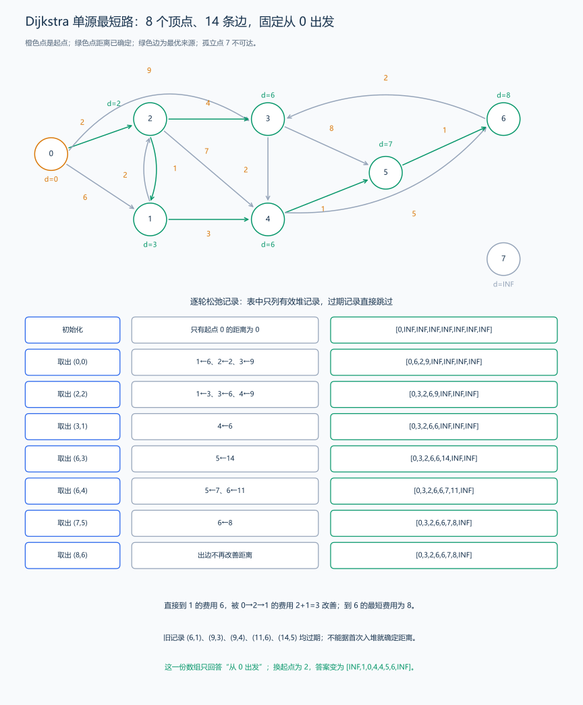
图中起点始终为 0，绿色边组成它的最短路径树；格外注意到 3 与到 4 的路线发生分叉，孤立点 7 保持不可达。
为什么取出最小有效候选就能确定距离？ 设已确定点集为 S，即将处理顶点 u 的候选为 d。假设存在更短路径，从起点沿它找到第一个不属于 S 的顶点 v；进入 v 的前驱在 S 中，它确定时已松弛这条边。由于后续边权非负，v 的候选不大于这条更短路径的总费用，也就小于 d；堆应先处理 v，与 u 当前最小矛盾。因此 d 已是最终距离。负边会破坏“后续费用不再降低”的条件。
| 有效取出记录 | 本轮得到的新候选 | distance |
|---|---|---|
| 初始化 | 只有起点 0 的距离为 0 | [0,INF,INF,INF,INF,INF,INF,INF] |
| 取出 (0,0) | 1←6、2←2、3←9 | [0,6,2,9,INF,INF,INF,INF] |
| 取出 (2,2) | 1←3、3←6、4←9 | [0,3,2,6,9,INF,INF,INF] |
| 取出 (3,1) | 4←6 | [0,3,2,6,6,INF,INF,INF] |
| 取出 (6,3) | 5←14 | [0,3,2,6,6,14,INF,INF] |
| 取出 (6,4) | 5←7、6←11 | [0,3,2,6,6,7,11,INF] |
| 取出 (7,5) | 6←8 | [0,3,2,6,6,7,8,INF] |
| 取出 (8,6) | 出边不再改善距离 | [0,3,2,6,6,7,8,INF] |
旧记录为什么仍在堆里？ 更新顶点 1 时，把新记录 (3,1) 加入堆，旧记录 (6,1) 仍存在。后续取出旧项发现 current!=distance[1]，直接跳过，不重复扫描出边。其他过期记录同理。零权边可使用；只有严格改善时入堆，避免相等候选反复扩展。
恢复路径： 每次松弛成功时另记 parent[v]=u。终点可达时沿父指针回到起点并反转；不可达时不回溯。只求距离的示例省略 parent，图中的绿色边展示这一来源关系。
#include <algorithm>
#include <functional>
#include <iostream>
#include <limits>
#include <queue>
#include <utility>
#include <vector>
using namespace std;
using ll = long long;
constexpr ll INF = numeric_limits<ll>::max() / 4;
struct Edge {
int to;
ll weight;
};
vector<ll> dijkstra(const vector<vector<Edge>> &graph, int start) {
vector<ll> distance(graph.size(), INF);
priority_queue<pair<ll, int>, vector<pair<ll, int>>, greater<pair<ll, int>>> pending;
distance[start] = 0;
pending.push({0, start});
while (!pending.empty()) {
auto [current, u] = pending.top();
pending.pop();
// 堆中可能有旧候选距离，过期记录直接跳过。
if (current != distance[u]) {
continue;
}
for (const Edge &edge : graph[u]) {
if (edge.weight < INF - current && current + edge.weight < distance[edge.to]) {
distance[edge.to] = current + edge.weight;
pending.push({distance[edge.to], edge.to});
}
}
}
return distance;
}
int main() {
int n, m, start;
cin >> n >> m >> start;
vector<vector<Edge>> graph(n);
while (m--) {
int u, v;
ll weight;
cin >> u >> v >> weight;
graph[u].push_back({v, weight});
}
auto distance = dijkstra(graph, start);
for (int i = 0; i < n; ++i) {
if (i != 0) {
cout << ' ';
}
cout << (distance[i] == INF ? -1 : distance[i]);
}
cout << '\n';
}输入：
8 14 0
0 1 6
0 2 2
0 3 9
1 2 2
1 4 3
2 1 1
2 3 4
2 4 7
3 4 2
3 5 8
4 5 1
4 6 5
5 6 1
6 3 2输出：
0 3 2 6 6 7 8 -1样例解释： 到 1 为 0→2→1，费用 3；到 3 为 0→2→3，费用 6；到 6 为 0→2→1→4→5→6，费用 2+1+3+1+1=8。到 7 无路，图中 INF 对应程序输出 -1。换起点 2，距离为 [INF,1,0,4,4,5,6,INF]，这与下一节矩阵的第 2 行对应。
代码与复杂度： 堆中保存 (候选费用,顶点)，先取费用较小的记录；发现更短路径后重新入堆，取到过期记录时跳过。INF 用来标记尚未找到路径的点，代码把实际路径费用与这个标记分开处理。重复入堆实现的时间为 \(O((n+m)\log(n+m))\)、空间 \(O(n+m)\)；简单图常写 \(O((n+m)\log n)\)。无向道路在邻接表中保存两个方向，处理过程相同。
练习题： 洛谷 P3371 — 单源最短路径（弱化版）、洛谷 P4779 — 单源最短路径（标准版）。
6. Floyd：所有点对最短路与距离矩阵
题目原文（自拟）： 输入一个 n×n 的有向图距离矩阵 distance，1<=n<=500。对角线为 0，非负边权不超过 10⁹，无边用 numeric_limits<long long>::max()/4 表示，重边预先取最小权值。求任意起点到任意终点的最短费用，原地更新矩阵；不可达格仍为 INF。示例使用与上一节完全相同的 8 点 14 边图。
所有点对的结果长什么样？ 让每个顶点分别作起点，求它到每个终点的距离，得到所有点对最短路，也称全源最短路。distance[i][j] 的行 i 是起点，列 j 是终点；整张矩阵包含 n 份单源答案。第 0 行等于上一节从 0 出发的数组，第 2 行等于从 2 出发的数组。即使某个点与起点 0 无法互达，也有以它为起点的一行，记录它到其他各点的距离。
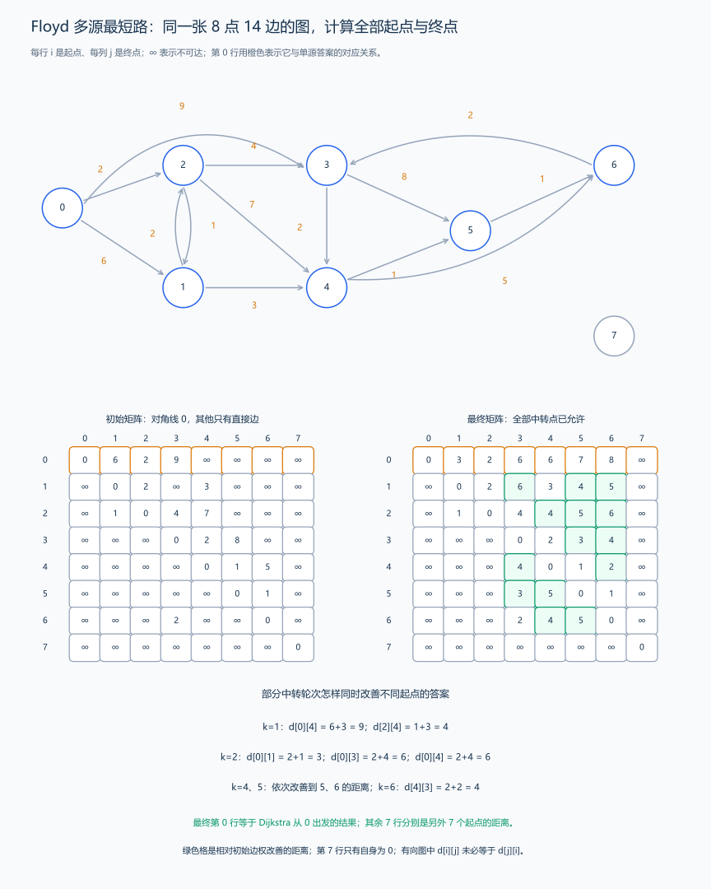
图中每个节点都可作为起点。初始只知道直接边，最终矩阵保存绕中转点后的距离；橙色第 0 行说明单源结果只是完整矩阵中的一行。
从具体路线到中转状态： 计算同图中 0→4 的距离。允许中转点 1 后，路线 0→1→4 费用为 6+3=9；从 2 到 4 则可经 2→1→4，费用为 1+3=4。现在新增允许中转点 2，出现新的路线 0→2→1→4。
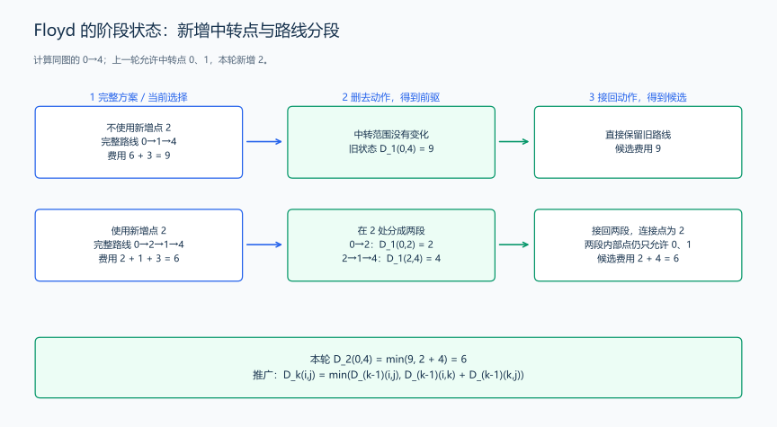
把候选路线在 2 处分开，前半段 0→2 费用 2，后半段 2→1→4 费用 4。两段的内部顶点仍只使用上一轮允许的点，因此前驱已经算好，接起来得到 2+4=6。再与不使用新增点 2 的旧答案 9 比较，当前距离改为 6。
这里单独记录 (i,j) 还没有交代“哪些中转点已经可以使用”。完整状态写成 D_k(i,j)：起点 i、终点 j，路径内部顶点只从 0…k 中选择的最短费用。起终点本身不受这个中转范围限制，例如上一轮也可以把 2 作为终点。
| 本轮候选类别 | 允许的内部点 | 前驱与合并 |
|---|---|---|
| 不使用新增中转点 k | 仍从 0…k-1 选择 |
沿用 D_{k-1}(i,j) |
| 使用新增中转点 k | 在 k 处分段，两段内部点仍从 0…k-1 选择 |
D_{k-1}(i,k)+D_{k-1}(k,j) |
任意经过 k 的最短路线都能在 k 处分成两段。若某段不是相应状态的最短路线，用更短的同起终点路线替换，再拼上另一段，完整费用也会减少。非负权图中的重复绕行可以去掉，因此可以保留各段的最短费用。两段费用相加得到这一类的候选，再与不经过 k 的类别取最小：
\[D_k(i,j)=\min\bigl(D_{k-1}(i,j),\ D_{k-1}(i,k)+D_{k-1}(k,j)\bigr).\]
还没有允许任何内部顶点时，只能使用直接边，起终点相同时为空路线费用 0。这就是初始距离矩阵。k 是求解过程的阶段，因此放在最外层循环；这一轮完成后，所有点对一起进入允许更多中转点的下一阶段。
先找到 i 到 k、k 到 j 的两段路径，才能把它们接成一条候选路径；所以遇到 INF 时跳过这次拼接。外层固定 k，这一轮所有点对都尝试同一个中转点。对角线为 0，经过 k 再到 k 的空段不会改变费用，于是这一轮可以直接更新当前矩阵。
| 允许的新中转点 | 对哪些起点和终点起作用 | 候选的具体计算 |
|---|---|---|
| k=1 | 0→4、2→4 | 6+3=9；1+3=4 |
| k=2 | 0→1、0→3、0→4 | 2+1=3；2+4=6；2+4=6 |
| k=4 | 多个起点到 5 | 例如 0→5 为 6+1=7 |
| k=5 | 多个起点到 6 | 例如 0→6 为 7+1=8 |
| k=6 | 4→3、5→3 | 2+2=4；1+2=3 |
后两行说明并非始终从 0 出发：同一轮同时更新多个起点的答案。后面继续依次尝试其他中转点，某轮没有更短路线时就保留原距离。
#include <algorithm>
#include <limits>
#include <vector>
using namespace std;
void floyd(vector<vector<long long>> &distance) {
constexpr long long INF = numeric_limits<long long>::max() / 4;
int n = static_cast<int>(distance.size());
// k 在最外层：当前轮只新增顶点 k 作为允许的中转点。
for (int k = 0; k < n; ++k) {
for (int i = 0; i < n; ++i) {
for (int j = 0; j < n; ++j) {
if (distance[i][k] < INF && distance[k][j] < INF) {
distance[i][j] = min(distance[i][j], distance[i][k] + distance[k][j]);
}
}
}
}
}样例输入矩阵（函数参数）： INF 使用上面约定的数值哨兵。
0 6 2 9 INF INF INF INF
INF 0 2 INF 3 INF INF INF
INF 1 0 4 7 INF INF INF
INF INF INF 0 2 8 INF INF
INF INF INF INF 0 1 5 INF
INF INF INF INF INF 0 1 INF
INF INF INF 2 INF INF 0 INF
INF INF INF INF INF INF INF 0调用 floyd(distance) 后的矩阵：
0 3 2 6 6 7 8 INF
INF 0 2 6 3 4 5 INF
INF 1 0 4 4 5 6 INF
INF INF INF 0 2 3 4 INF
INF INF INF 4 0 1 2 INF
INF INF INF 3 5 0 1 INF
INF INF INF 2 4 5 0 INF
INF INF INF INF INF INF INF 0怎样读答案？ 第 0 行为 [0,3,2,6,6,7,8,INF]；第 2 行为 [INF,1,0,4,4,5,6,INF]；第 4 行说明 4→3 要经 4→5→6→3，费用 4。第 7 行只有自身为 0。distance[0][1]=3，distance[1][0]=INF，方向使矩阵不对称，不能把它当无向图读。
代码与复杂度： 三层循环依次枚举中转点、起点和终点，时间为 \(O(n^3)\)，距离矩阵占 \(O(n^2)\) 空间。例如 n=500 时，核心循环约有 500³=1.25×10⁸ 次，每次比较候选路线；矩阵有 25 万项。建表时对角线写 0，没有边的位置写 INF，重边取最小权值；零权边写 0，与 INF 区分。随后每一轮沿前面的松弛过程更新矩阵。
练习题： 洛谷 B3647 — Floyd。
7. 拓扑排序
题目原文（自拟示例）： 给定有向图，用边 u→v 表示任务 u 必须先于任务 v 完成。返回一个满足所有依赖的顶点排列；若有环，返回失败。顶点编号为 0 到 n-1。
思路分析： 没有前置依赖的顶点入度为 0，可以先处理。删除它的出边后，新的入度为 0 的顶点继续入队。
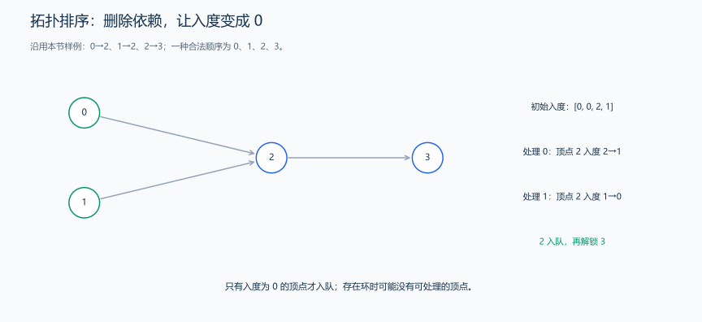
顶点 2 有来自 0、1 的两条依赖，初始入度为 2。处理其中一个前置任务后，入度变为 1；另一个也处理完后，入度变为 0，才把 2 加入队列。
对边 0→2、1→2、2→3，初始入度 [0,0,2,1]、队列 [0,1]。处理 0 只把 2 的入度减到 1，不能入队；处理 1 才减到 0，把 2 加入；处理 2 后解锁 3。若队列耗尽而输出数少于 n，剩余顶点仍互相依赖，存在有向环；孤立点初始入度为 0，也要加入。
入度记录“还有几个前置依赖没完成”。 入度为 0 的任务现在就可执行，先放进队列。处理顶点 u 后，它的每条出边 u→v 表示的一项依赖已经满足，令 indegree[v] 减一；只有减到 0，才说明所有前置任务都已完成，可以把 v 加入队列。
样例初始入度为 [0,0,2,1]，队列含 0、1。处理 0 后，顶点 2 的入度从 2 变成 1，还不能入队；处理 1 后降为 0，才入队；然后处理 2 解锁 3。
若有有向环，环上每个顶点都依赖尚未完成的环上前驱，无法靠删除环外边清掉这些依赖，所以它们不会被全部处理。反过来，如果还有顶点却没有入度 0 的点，在有限的剩余图中不断追溯前驱必会重复顶点，形成环。因此“处理数小于 n”既能发现有环，也不会误判 DAG。
多种合法顺序都可以满足依赖。若题目只要任意拓扑序，普通队列即可；要求字典序最小，则每次从全部可执行任务中选择编号最小者，需要小根堆，并重新计入堆操作的复杂度。
有环时怎样停住？ 对 0→1、1→2、2→1，开始只有 0 入度为 0。处理它之后，1 仍依赖 2，2 仍依赖 1，队列为空但两点未处理，返回失败。未输出顶点可能在环内，也可能只是依赖于环，不能把全部剩余点都断言为环内点。
拓扑序把每条依赖边的起点排在终点之前。两个互不依赖的任务可以交换位置，所以同一个图可能有多种拓扑序。顺序中的相邻任务也可能没有边连接；这个排列表示执行次序，路径则表示沿边经过的顶点。
#include <queue>
#include <utility>
#include <vector>
using namespace std;
pair<bool, vector<int>> topologicalOrder(const vector<vector<int>> &graph) {
int n = static_cast<int>(graph.size());
vector<int> indegree(n, 0);
for (const auto &edges : graph) {
for (int v : edges) {
++indegree[v];
}
}
queue<int> pending;
for (int u = 0; u < n; ++u) {
if (indegree[u] == 0) {
pending.push(u);
}
}
vector<int> order;
while (!pending.empty()) {
int u = pending.front();
pending.pop();
order.push_back(u);
for (int v : graph[u]) {
// 当前顶点已经完成，删除它的依赖后，入度为 0 的邻居可处理。
if (--indegree[v] == 0) {
pending.push(v);
}
}
}
// 没处理完所有顶点时，剩余依赖中存在环。
bool acyclic = static_cast<int>(order.size()) == n;
return {acyclic, order};
}样例： 依赖为 0→2、1→2、2→3，可以输出 0 1 2 3；加入 3→0 后存在环。
代码解释： 如果最终处理的顶点数小于 n，说明有顶点被环上的依赖阻塞。若要字典序最小的拓扑序，把普通队列换为小根堆。普通版本时间 \(O(V+E)\)，额外空间 \(O(V)\)。
练习题： 洛谷 B3644 — 拓扑排序 / 家谱树。
8. DAG 上的 DP：用拓扑序安排状态转移
题目原文（自拟）： 输入有向图邻接表 graph，每条记录为 (终点,整数边权)，及合法起点 start。1<=n<=100000、0<=m<=200000，边权绝对值不超过 10⁹。若图有环，函数返回 false 和空数组；无环时返回 true 和起点到各点的最长路径费用。不可达用 numeric_limits<long long>::lowest()/4 标记，起点空路径费用为 0。
状态与推导： 令 dp[v] 表示从固定起点 start 到 v 的路径中最大费用。先看起点 0，边为 0→1:2、0→2:5、1→2:4、1→3:-1、2→3:1。
到 3 有三条路线：0→1→3 费用 1，0→2→3 费用 6，0→1→2→3 费用 7。按最后一条边分组，把这条边拿掉：
| 最后一条边 | 删去后允许的前驱路线 | 前驱的最大费用 | 接回后的候选 |
|---|---|---|---|
1→3，权值 -1 |
0→1 |
dp[1]=2 |
2-1=1 |
2→3，权值 1 |
0→2 或 0→1→2 |
dp[2]=max(5,6)=6 |
6+1=7 |
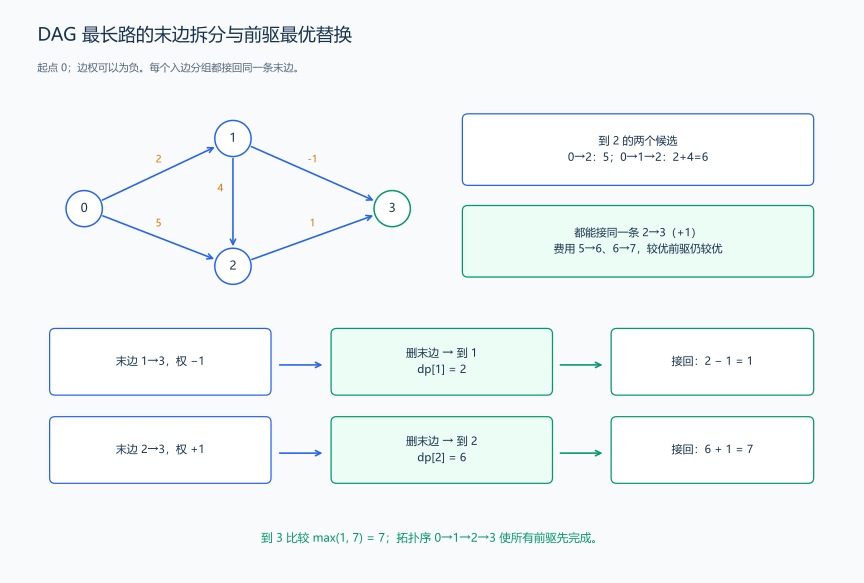
同一组最后都经过同一条边，它的权值不变，因此最大前驱加这条边，也得到该组的最大费用。换成更好的到 u 路线后仍能接 u→v：在 DAG 中，如果前驱路线已经经过 v，再接回来就会产生有向环，所以这里不存在这种冲突。枚举全部入边，覆盖所有非空路径，再比较各组最大费用。
\[dp[v]=\max_{\substack{u\to v\\u\text{ 从起点可达}}}\bigl(dp[u]+w(u,v)\bigr).\]
dp[u] 是前一段的费用，w(u,v) 是接回末边的费用。只有能从起点到达 u，才有实际路径可以接入。
起点不走边的空路径费用为 0，其他点先写 NEG 表示还没有路径。例如只有边 0→1:-2，到 1 的答案应为 -2；如果先把它写成 0，这个没有路线支持的 0 就会压过真实费用。所以初值是起点 0、其余 NEG。
拓扑序保证 v 的所有前驱都在它之前。代码采用“处理 u 时向后继传播候选”的方式：处理 0 得 [0,2,5,NEG]；处理 1 时，将到 2 的 5 改成 6，并产生到 3 的候选 1；处理 2 时，再将到 3 的 1 改成 7。轮到 3 时，它的入边候选全部到齐。
#include <algorithm>
#include <limits>
#include <queue>
#include <utility>
#include <vector>
using namespace std;
pair<bool, vector<long long>> dagLongest(
const vector<vector<pair<int, int>>> &graph, int start) {
const long long NEG = numeric_limits<long long>::lowest() / 4;
int n = graph.size();
vector<int> indegree(n, 0);
for (const auto &edges : graph)
for (auto [v, w] : edges) ++indegree[v];
queue<int> q;
for (int u = 0; u < n; ++u) if (indegree[u] == 0) q.push(u);
vector<long long> dp(n, NEG);
dp[start] = 0; // 起点的空路径费用为 0，其余尚不可达。
int processed = 0;
while (!q.empty()) {
int u = q.front();
q.pop();
++processed;
for (auto [v, w] : graph[u]) {
if (dp[u] != NEG) dp[v] = max(dp[v], dp[u] + w);
if (--indegree[v] == 0) q.push(v); // 所有前驱处理完才展开后继。
}
}
if (processed != n) return {false, {}}; // 有环时不提供 DAG 答案。
return {true, dp};
}手算样例： start=0，边为 0→1:2、0→2:5、1→2:4、1→3:-1、2→3:1。初值 [0,NEG,NEG,NEG]；处理 0 得 [0,2,5,NEG]；处理 1 得 [0,2,6,1]；处理 2 得 [0,2,6,7]。到 3 最长为 0→1→2→3，费用 2+4+1=7。
代码与复杂度： indegree 记录还剩多少前置任务，dp 记录当前最长路径费用。处理一个顶点时，先删除它对后继的依赖；如果从起点能到它，再把路径费用传给后继。这样任务顺序与路径计算分别完成，时间 \(O(n+m)\)，额外空间 \(O(n)\)，另计图存储。
练习题： 洛谷 P1807 — 最长路。
9. 无向树的根、父节点与深度计算
无向树本来没有父子关系。指定根后，从根通向各点的唯一简单路径决定父节点：沿路径靠近根的一端为父，另一端为子。换根会改变父子与深度，却不改变边。二叉树最多有两个有次序的孩子，图论中的树允许任意多个孩子；邻接表记录的是双向邻居。
题目原文（自拟）： 输入有 n>=1 个顶点的无向树，每条边在邻接表 tree 中双向保存，并给定根 root。返回各点的 parent 与 depth；根的 parent 为 -1，深度为 0，其余点的深度是根到该点路径的边数。
分析： 从根 BFS。首次发现 v 时当前 u 就是父节点，深度比 u 多 1。反向记录会指回父节点，已发现判断将其跳过。因为树中路径唯一，这次发现的父关系没有歧义。
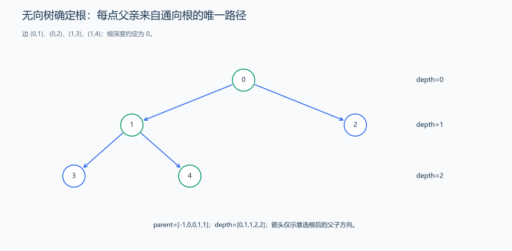
根为 0 时，通向 4 的唯一路径是 0→1→4，深度为 2。
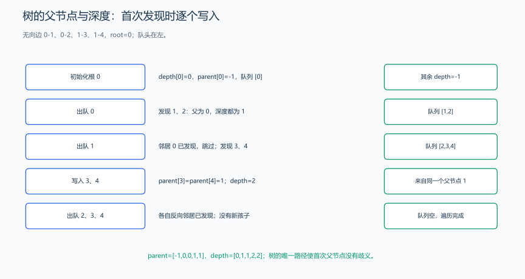
根 0 出队时发现 1、2，写 parent[1]=parent[2]=0、深度均为 1；节点 1 出队时先跳过已发现的 0，再发现 3、4，写父节点为 1、深度为 2。父指针的写入来自这次首次发现，不是事后看到树形就填答案。无向边会产生反方向记录，访问判断防止重新入队。
#include <queue>
#include <utility>
#include <vector>
using namespace std;
pair<vector<int>, vector<int>> rootTree(const vector<vector<int>> &tree, int root) {
vector<int> parent(tree.size(), -1), depth(tree.size(), -1);
queue<int> q;
depth[root] = 0;
q.push(root);
while (!q.empty()) {
int u = q.front();
q.pop();
for (int v : tree[u]) {
if (depth[v] != -1) continue; // 跳过已发现节点，避免沿反向边重复入队。
parent[v] = u;
depth[v] = depth[u] + 1; // 根深度为 0，按边数计深度。
q.push(v);
}
}
return {parent, depth};
}样例： 边 (0,1)、(0,2)、(1,3)、(1,4)，root=0 时 parent=[-1,0,0,1,1]、depth=[0,1,1,2,2]。root=3 时 3→1→0 的父子方向改变，0 的深度变为 2。
复杂度： 树有 n-1 条边，每个节点与连接处理一次，时间和额外空间为 \(O(n)\)。对一般图搜索时，首次发现的连接形成一棵搜索树；其他连接仍保存在原图中。
练习题： 洛谷 P3884 — 二叉树问题（按题面调整深度与路径代价）、洛谷 P4913 — 二叉树深度。
10. 最小生成树：Kruskal 按权值选边
生成树从连通无向图中选边，保留全部顶点并使其连通且无环；最小生成树使所选边权和最小。它优化整张网络的总建造费用，和某起点到各点的最短距离是不同目标。
题目原文（自拟）： 第一行输入 n m，1<=n<=100000、0<=m<=200000。随后 m 行输入 u v w，表示无向边，编号为 0…n-1，权值绝对值不超过 10⁹，允许重边、自环。选择一些边连接全部顶点，输出最小总边权；无法连接全部顶点时输出 IMPOSSIBLE。只有一个顶点时空边集费用为 0。
算法： 初始每个点独自成块。边按权值升序，连接不同块就选并合并，连接同块就跳过，因为会形成环。选到 n-1 条时完成生成树；全部边检查后仍不足则不连通。
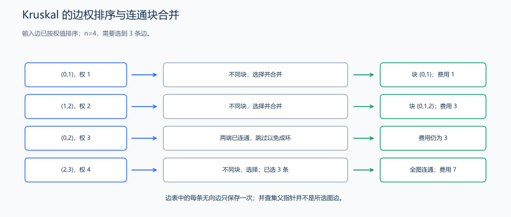
小权边先连接不同块，已连通两端之间的边会成环而跳过。
为什么能选当前最小的跨块边？ 固定已选边形成的某块 C，当前边 e 跨出 C，且在这个切分的边中权值最小。考虑一棵包含此前选择的最优生成树：若有 e 无需改变；若没有，加入 e 会成环，环上必有另一条跨出 C 的边 f。f 不是此前已选的块内边，权值不小于 e。删 f 后仍是生成树，费用不增，并保留此前选择与 e。因此存在一个最优解能接受本次选择，逐步交换即可证明正确。
10.1 排序与并查集选边
#include <algorithm>
#include <functional>
#include <numeric>
#include <tuple>
#include <utility>
#include <vector>
using namespace std;
pair<bool, long long> kruskal(int n, vector<tuple<long long, int, int>> edges) {
sort(edges.begin(), edges.end()); // 元组第一项是权值，升序检查。
vector<int> parent(n), size(n, 1);
iota(parent.begin(), parent.end(), 0);
function<int(int)> find = [&](int x) -> int {
if (parent[x] != x) parent[x] = find(parent[x]); // 路径压缩。
return parent[x];
};
long long total = 0;
int used = 0;
for (auto [weight, u, v] : edges) {
int a = find(u), b = find(v);
if (a == b) continue; // 已连通，选这条边会成环。
if (size[a] < size[b]) swap(a, b);
parent[b] = a; // 只合并根，小树接到大树。
size[a] += size[b];
total += weight;
if (++used == n - 1) break;
}
return {used == n - 1, total}; // 失败时 total 仅是森林费用。
}并查集含义与前一章相同，函数内部直接保存父指针和集合大小。edges 按值传入，排序不改变调用者的边表。
10.2 读入与输出
下面片段与上面的头文件和函数依次放在同一 .cpp 中。
#include <iostream>
// main 之前放入上面的头文件和 kruskal 实现。
int main() {
int n, m;
cin >> n >> m;
vector<tuple<long long, int, int>> edges;
while (m--) {
int u, v;
long long w;
cin >> u >> v >> w;
edges.push_back({w, u, v}); // 无向边在边表中只保存一次。
}
auto [connected, total] = kruskal(n, edges);
if (connected) cout << total << '\n';
else cout << "IMPOSSIBLE\n";
}输入：
4 5
0 1 1
1 2 2
0 2 3
2 3 4
0 3 10输出：
7样例推导： 选 (0,1,1) 得块 {0,1}；选 (1,2,2) 得 {0,1,2}；(0,2,3) 两端已连通，跳过；选 (2,3,4) 后全部连通，费用 1+2+4=7。平权边可能有多种最优选择，负权边仍可按相同规则处理，自环总被跳过。
复杂度： 排序 \(O(m\log m)\)，初始化 \(O(n)\)，所有边查询合并共 \(O(m\alpha(n))\)，总时间 \(O(n+m\log m)\)，空间 \(O(n+m)\)，包括排序的边表副本。失败时不能把森林费用输出为连接全图的答案。
练习题： 洛谷 P3366 — 最小生成树（顶点按 1 编号，不连通输出 orz）。
11. 图算法的选择与题目对应
先明确点、边、方向、权值、是否有环以及答案含义，再对照本章完整例题。规模写为 n、m，不能只看顶点数而忽略稠密图的边数。
| 问题模型 | 对应方法 | 核心思路 |
|---|---|---|
| 无向图可达、连通块 | DFS、BFS、并查集 | 覆盖可达集合，或维护集合合并 |
| 每步代价相同的最少步数 | BFS | 较短层先处理 |
| 非负边权、单起点最短路 | Dijkstra | 最小有效候选不会被未处理路径改善 |
| 点很少、任意两点最短路 | Floyd | 逐轮允许中转点，时间 \(O(n^3)\) |
| 任务依赖排列、有无有向环 | 拓扑排序 | 依次删除无前置依赖的顶点 |
| 把相邻对象分到不同组 | 二分图染色 | 沿边交替颜色并检查矛盾 |
| DAG 最长路径 | 拓扑序 DP | 全部前驱先计算 |
| 连接全图的最小总费用 | 最小生成树 | 连接不同块，交换论证保证最优 |
提交检查： 无向边是否双向存储？编号是否统一转换？不可达是否与 0 费用区分？多组图与数组是否重建？自环、重边、不连通如何处理？递归深度是否可能等于顶点数？沿具体输入运行一遍，观察每个判断怎样改变图、队列和距离。